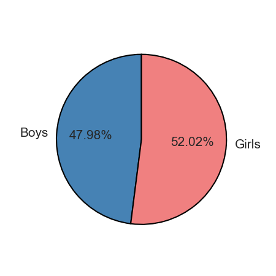
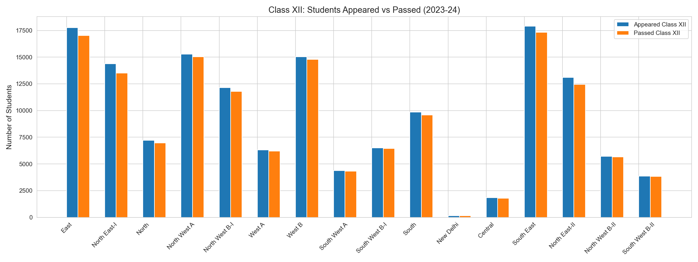

1. Total Number of Schools per districts

Analysis:There is significant variation in the number of schools among the districts. The East district has the highest count, approximately 120 schools, followed by North West A and South East which also show high numbers. In stark contrast, the New Delhi district has the fewest schools, with a count of only about three or four. Overall, the data illustrates a sharp drop-off in the total number of schools from the highest-ranking districts to the lowest.
2. Distibution of School Types across districts
Analysis:There is significant dominance of Senior Secondary Schools across all districts.
- Senior Secondary Schools: These schools are the most numerous. The districts with the highest counts are East and North West A, both having approximately 110 Senior Secondary Schools. South East also shows a high count, around 90.
- Other School Types: Counts for Primary, Middle, and Secondary schools are substantially lower compared to the Senior Secondary level across all districts, often registering near-zero.
- Exceptions: The South East and North East-II districts show a slightly higher, though still small, count of Secondary schools (green bars), reaching around 14-15. The East district shows the highest count of Primary schools (blue bar), at around 7-8.
- Lowest Count: The New Delhi district has the lowest numbers overall, with its Senior Secondary school count being very low (around 3-4), and other school types being negligible.
In conclusion, the data indicates that the educational infrastructure in these districts is heavily weighted toward the Senior Secondary level.
3. Student Enrollment per District

Analysis:
- East district has the highest student enrollment, at approximately 18,000 students
- North West A and South East follow with the next highest enrollments
- Enrollment shows a decreasing trend across the districts presented, with a significant drop-off towards the right end of the chart
- New Delhi district has the lowest enrollment
4. Student Enrollment (Boys vs Girls) per District Analysis

- Highest Enrollment: The East district leads in total enrollment for both genders, with girls (approximately 100,000) slightly outnumbering boys (approximately 90,000).
- Female Dominance: Several districts show a noticeable majority of female students, including East, North East-I, North West A, West B, and South East.
- Balanced Enrollment: The North West B-I district stands out with the most balanced gender enrollment, with both boys and girls registering around 70,000 students.
- Lowest Enrollment: Consistent with prior data, the New Delhi district shows negligible enrollment for both genders, near the zero mark.
In summary, the data indicates a slightly higher participation rate for girls compared to boys across the majority of the districts.
5. Analysis of Spread of Pass Percentages across Districts (Class X vs. Class XII)
The box plot illustrates the distribution and variability of pass percentages for Class X and Class XII across the districts.
Analysis:
- Median Pass Percentage: The median (the orange line inside the box) for Class XII is significantly higher than that of Class X. Class XII's median is approximately 97.2%, while Class X's median is around 94.5%. This suggests that, on average, districts perform better at the Class XII level.
-
Variability (Spread):
- Class X shows a wider overall spread, ranging from a minimum of approximately 90% up to a maximum near 98.5%. This indicates greater variability or inconsistency in Class X pass percentages across different districts.
- Class XII shows a narrower overall spread, ranging from a minimum of approximately 94% up to a maximum near 99.5%. This indicates less variability and generally higher minimum performance across districts for Class XII.
- Interquartile Range (IQR): The box itself, representing the middle 50% of the data (IQR), is generally positioned higher for Class XII (between ~96% and ~98.5%) compared to Class X (between ~93% and ~97.5%).
In summary, districts tend to achieve a higher median pass rate with less variation in performance at the Class XII level compared to the Class X level.

6. Analysis of Gender Distribution
Analysis:
Analysis:
- Girls constitute a slight majority of the total student enrollment, accounting for 52.02%.
- Boys represent 47.98% of the total student enrollment.
This distribution indicates that, in total, there are slightly more female students than male students enrolled across the analyzed districts (a difference of approximately 4%).
7. Pass Percentage Trend across Districts
8. Comparative Analysis: Class X vs. Class XII Students Appeared vs. Passed (2023-24)
These two clustered bar charts compare the number of students who appeared for and passed the Class X and Class XII examinations across various districts.
Overall Trends (Applicable to both Classes):
- High Pass Rate: In both Class X and Class XII, the number of students who passed (orange bar) is only marginally lower than the number of students who appeared (blue bar) in almost all districts. This indicates a consistently very high pass percentage at both levels.
- High Volume Districts: The districts with the highest student volumes for both appearing and passing are East, North West A, and South East.
- Low Volume Districts: The New Delhi district shows virtually no activity, and the Central district registers the lowest meaningful student numbers for both classes.
Comparative Analysis (Class X vs. Class XII):
- Student Drop-off: High-volume districts like **East** and **South East** show a noticeably higher number of students appearing for **Class X** (East: ~20,000; South East: ~19,000) compared to **Class XII** (East: ~17,500; South East: ~17,800). This suggests a moderate drop-off in enrollment between the secondary and senior secondary levels in these districts.
- Consistency of Pass Rate: While the pass rate is high for both, a close inspection suggests that the gap between appeared and passed students (i.e., the failure count) is very slightly smaller for most Class XII clusters than for the corresponding Class X clusters. This aligns with the box plot analysis showing a slightly higher pass percentage for Class XII.
- West B District: This district is one of the few where the number of students appearing for **Class XII** (~15,000) is roughly the same as those appearing for **Class X** (~15,000).
In conclusion, the data demonstrates high student retention from appearance to passing in both classes, but with consistently higher overall student volumes observed at the Class X level compared to Class XII.